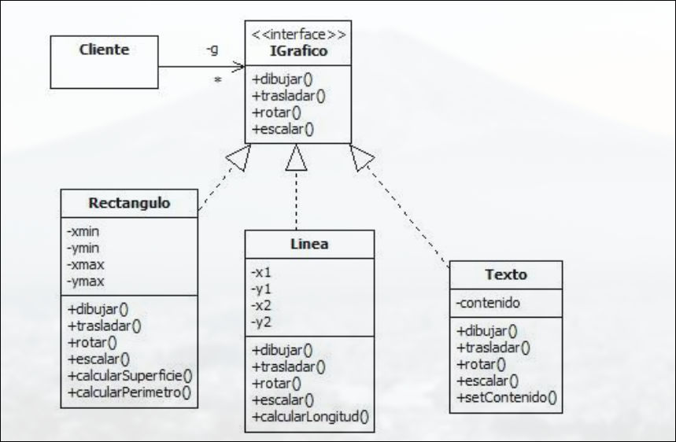
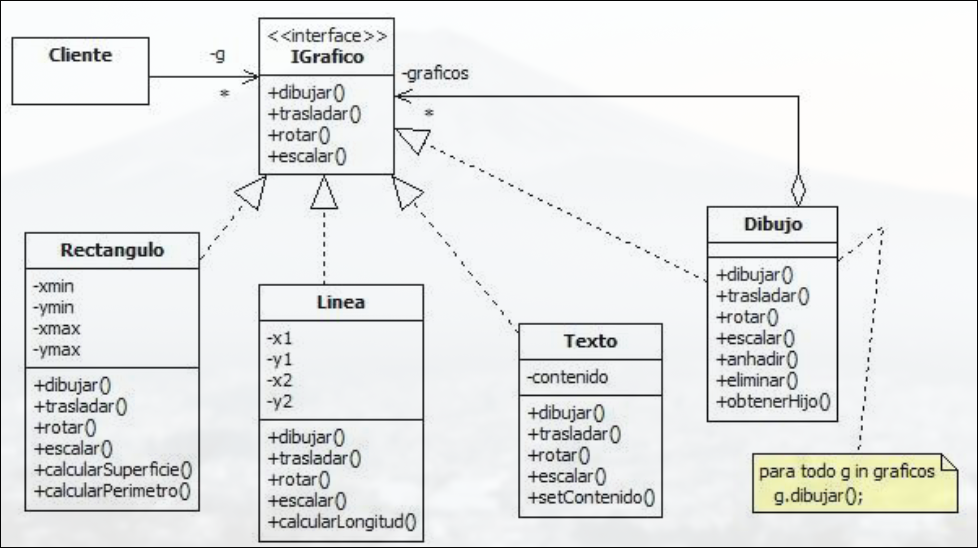
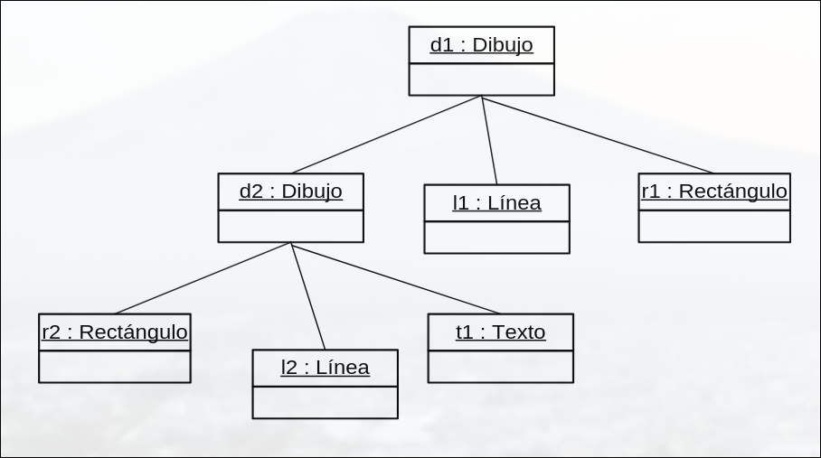
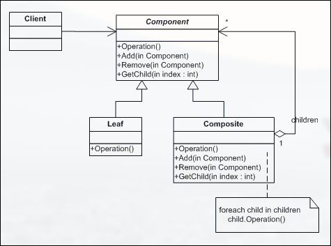
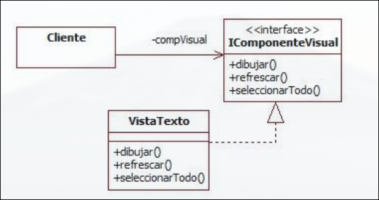
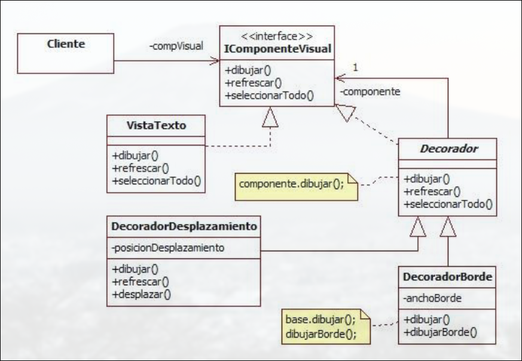
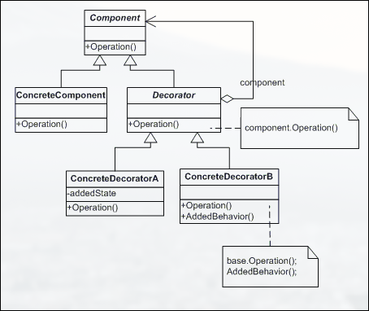

DESOFT · curso 2
9. Patrones Estructurales
9.1 Patrón Composite
Organiza objetos en estructura de árbol para representar jerarquías. Permite tratar de manera uniforme a individuos y grupos. Se usa para:
- Representar jerarquías de objetos parte-todo.
- Obviar diferencias entre los individuos y sus composiciones.



Participantes
| Rol | Descripción |
|---|---|
| Componente | Define la interfaz común para todos los objetos (hojas y compuestos). Puede incluir comportamiento por defecto. |
| Hoja | Representa objetos simples que no contienen otros. Implementan la interfaz, pero no gestionan hijos. |
| Compuesto | Contiene otros componentes (hojas o compuestos). Implementa operaciones para añadir, eliminar o acceder a los hijos. |
| Cliente | Usa objetos a través de la interfaz del componente, sin preocuparse si es hoja o compuesto. |
Estructura

## Ventajas e Inconvenientes - Permite **composición recursiva**, es decir, compuestos dentro de compuestos. - Simplifica el código del cliente al unificar el tratamiento de todos los elementos. - Facilita añadir nuevos tipos de componentes.- Puede ser difícil restringir qué tipos de componentes se pueden añadir dentro de un compuesto.
- A veces, hay métodos en la interfaz común que no tienen sentido para todas las clases (por ejemplo,
add()en una hoja).
9.2 Patrón Decorator
Asigna/retira responsabilidades adicionales a un objeto particular dinámicamente. Proporciona una alternativa flexible a la herencia para ampliar funcionalidad. Suele combinarse con Composite. Se usa para:
- Otorgar o revocar responsabilidades a objetos individuales de manera dinámica y transparente.
- Cuando no es viable la extensión mediante herencia


Participantes
| Rol | Descripción |
|---|---|
| Componente | Interfaz común para objetos que pueden tener funcionalidades añadidas. |
| ComponenteConcreto | Implementación base que puede ser decorada. |
| Decorador | Clase abstracta que implementa la interfaz y contiene una referencia a un componente. |
| DecoradorConcreto | Añade funcionalidades específicas al componente envolviendo su comportamiento. |
Estructura

Ventajas e Inconvenientes
-
Mucho más flexible que la herencia: puedes combinar decoradores fácilmente.
-
Evita clases "gigantes" con muchas funcionalidades opcionales.
-
Puedes decorar objetos en tiempo de ejecución.
-
Los decoradores no son idénticos al objeto decorado, lo cual puede ser confuso en ciertos contextos.
-
Puede generar múltiples objetos pequeños muy similares, que pueden ser difíciles de rastrear y depurar.